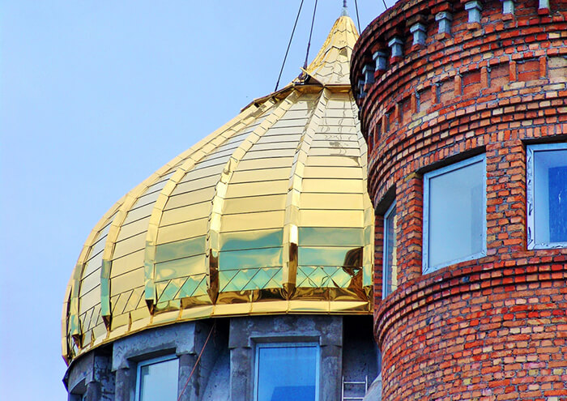
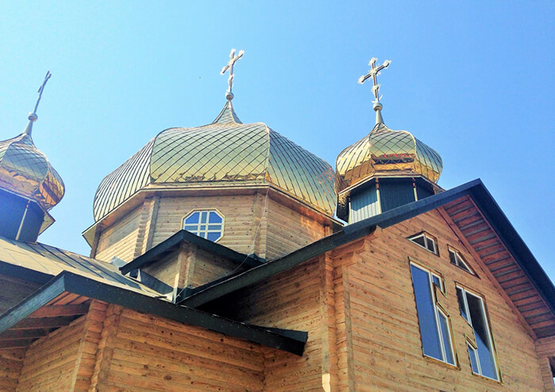
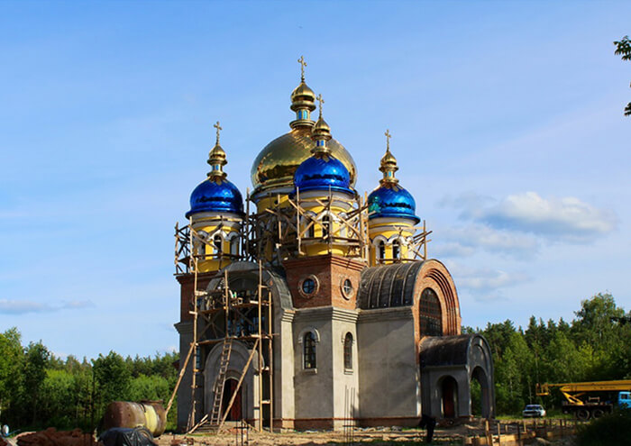
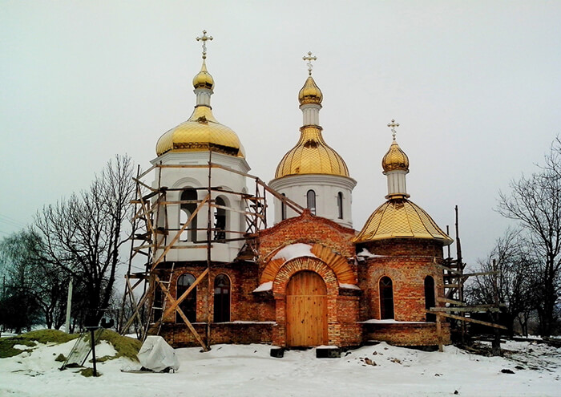
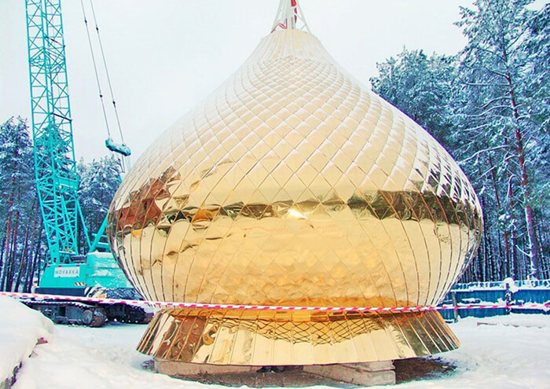

ПРОЕКТИРОВАНИЕ И ИЗГОТОВЛЕНИЕ
КУПОЛОВ
При проектировании куполов учитываются: климатическая зона, атмосферные условия, ветровые нагрузки, совместимость с закладными деталями, возможные способы транспортировки и монтажа. Все работы выполняются коллективом квалифицированных специалистов, прошедших специальную подготовку и аттестацию.
Проектная документация разрабатывается при помощи лицензионного программного обеспечения. Конструкторы создают 3-х мерную математическую модель купола и подробное описание изделия, включающее в себя всю информацию, которая может понадобиться в процессе производства.
Она помогает оптимизировать все этапы жизненного цикла изделий:
-
- потребность в материалах
-
- концептуальное проектирование
-
- подготовка и технология производства
-
- взаимодействие конструкторов, технологов и других специалистов
Подобный подход по разработке документации, а также большой опыт, накопленный предприятием, позволяет в короткие сроки разрабатывать высокотехнологичные изделия, учитывающие все требования Заказчика

- 
- 
- 
- 

- 

ГАРАНТИЙНЫЕ ОБЯЗАТЕЛЬСТВА
Научно-производственная фирма «Покров» гарантирует атмосферостойкость напыленного покрытия нитрида титана на протяжении 50 лет, по результатам испытаний на действие промышленной атмосферы в соответствии нормативным документам по ГОСТ 9.308-85, ГОСТ 9.908-85 и ГОСТ 92-1346-83 на изделия из магнитной нержавеющей стали 12Х17 ГОСТ 1982-73 и немагнитной нержавеющей стали 04Х18Н9 ГОСТ 19282-73.
Вся продукция, изготовленная предприятием «ПОКРОВ», полностью соответствует всем нормативным документам по:
ТУ У 25.6 – 37651685 – 001:2012. «Покрытия металлические ионно-плазменные» и и подтверждено сертификатом качества №UA1.012.0006075-13, который можно проверить в реестре системы УкрСЕПРО.